Viral video analysis / shot archive
宠物事故喜剧拆解档案
总结
这条视频的核心不是“猫可爱”，而是“猫认真做错事”：猫砂盆这个本该解决问题的场景，反而制造了一个有味道的事故。字幕没有单纯解释画面，而是替主人完成吐槽，再把猫拟人化成一个有自己逻辑的喜剧角色。
生产分镜压缩表
| 编号 | 镜头范围 | 功能 | 复用方式 |
|---|---|---|---|
| F001 | S001-S003 | 厕所场景建立 | 先让观众理解宠物刚完成一个日常行为。 |
| F002 | S004-S006 | 事故证据揭示 | 用箭头/字幕指向画面证据，让笑点成立。 |
| F003 | S007-S008 | 拟人化吐槽 | 把宠物的错误行为包装成它自己的荒诞逻辑。 |
| F004 | S009-S010 | 停顿收尾 | 保留无辜表情和旁观反应，把解释权交给评论区。 |
关键镜头总览
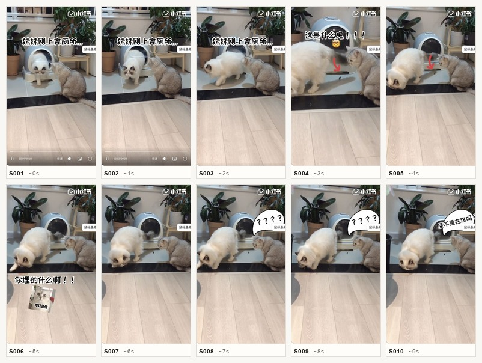
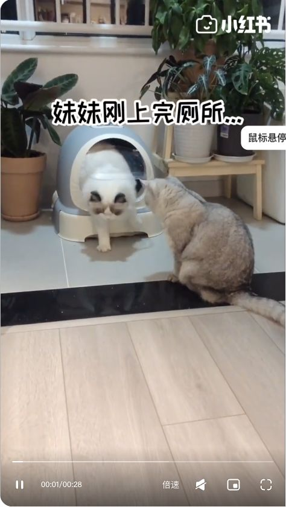
S001 00:00-00:01
- 画面
- 固定机位，猫砂盆、植物、两只猫同框，白猫刚从厕所附近出来
- 动作
- 先建立厕所场景和“刚上完厕所”的事实
- 叙事功能
- Setup
- 情绪功能
- 预感不妙
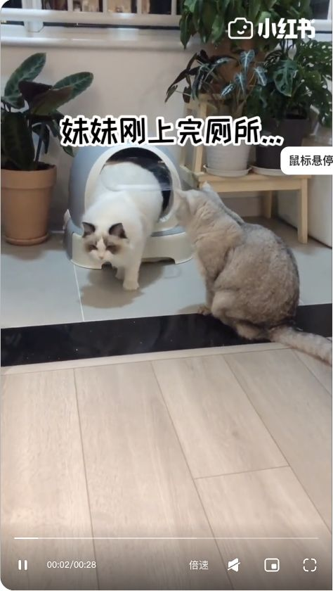
S002 00:01-00:02
- 画面
- 白猫贴近猫砂盆出口，灰猫坐在旁边观察
- 动作
- 把“事件发生地”锁定在猫砂盆周围
- 叙事功能
- Evidence Setup
- 情绪功能
- 围观感
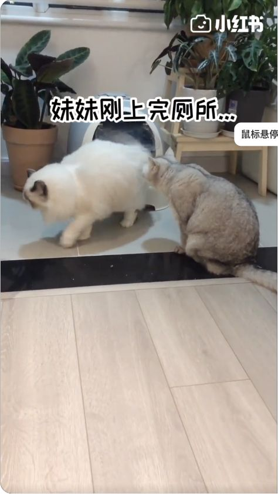
S003 00:02-00:03
- 画面
- 白猫低头靠近地垫/地面，动作很自然
- 动作
- 让观众开始寻找异常点
- 叙事功能
- Curiosity Gap
- 情绪功能
- 疑惑
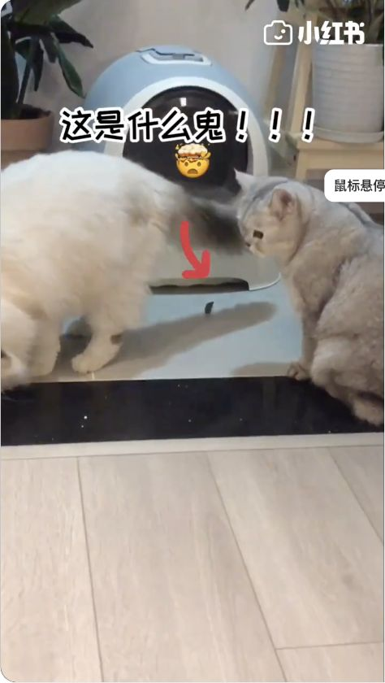
S004 00:03-00:04
- 画面
- 字幕/箭头指向地面异物，画面从普通宠物日常变成事故现场
- 动作
- 揭示“有味道”的具体来源
- 叙事功能
- Reveal
- 情绪功能
- 突然好笑
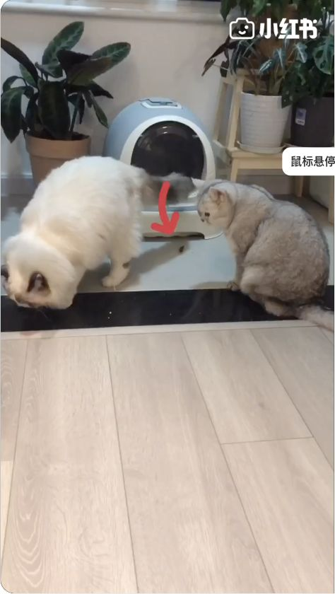
S005 00:04-00:05
- 画面
- 白猫继续在垫子附近，旁边猫无辜围观
- 动作
- 用猫的无辜反应放大荒诞感
- 叙事功能
- Reaction
- 情绪功能
- 荒诞
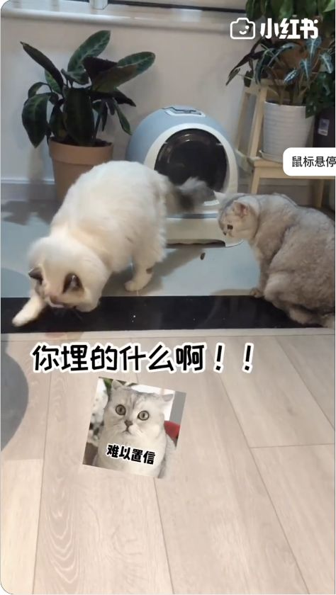
S006 00:05-00:06
- 画面
- 画面停留在两只猫和猫砂盆，事故结果仍可见
- 动作
- 让观众确认不是误会
- 叙事功能
- Proof
- 情绪功能
- 尴尬好笑
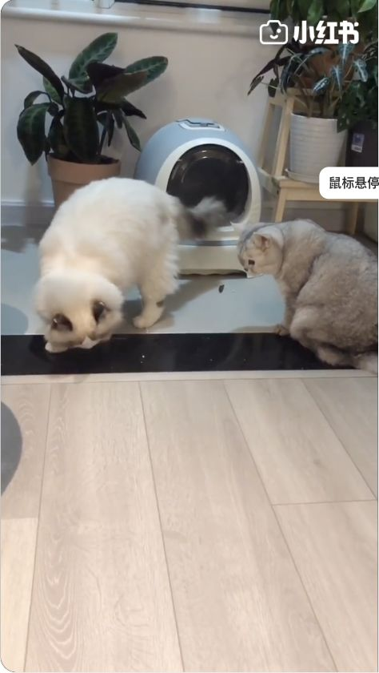
S007 00:06-00:07
- 画面
- 气泡字幕出现“？？？？”式反应
- 动作
- 给猫加上人类心理活动
- 叙事功能
- Personification
- 情绪功能
- 拟人喜剧
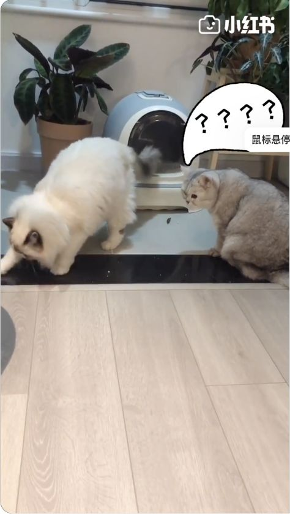
S008 00:07-00:08
- 画面
- 气泡字幕转向反问逻辑：屎不是在这吗
- 动作
- 把错误行为包装成猫自己的“合理解释”
- 叙事功能
- Punchline
- 情绪功能
- 反转
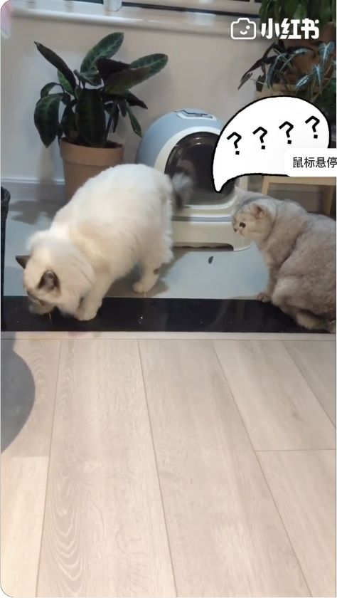
S009 00:08-00:09
- 画面
- 白猫继续低头行动，灰猫保持旁观
- 动作
- 用无事发生的自然感收尾
- 叙事功能
- Aftertaste
- 情绪功能
- 余味
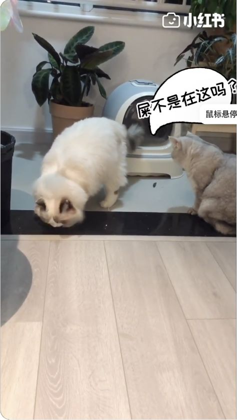
S010 00:09-00:10
- 画面
- 固定机位继续停顿，保留评论区讨论空间
- 动作
- 把问题留给观众解释
- 叙事功能
- Comment Trigger
- 情绪功能
- 想评论
AI 生产蓝图
复用这类视频时，关键不是复制猫砂盆，而是保留“正常宠物行为 -> 异常证据 -> 主人吐槽 -> 宠物拟人化反问”的喜剧链条。画面必须先给证据，字幕再补刀。
变量槽
pet_role
犯事猫 / 无辜狗 / 旁观猫 / 假装没事的宠物
accident_type
厕所事故 / 偷吃翻车 / 打翻水杯 / 埋错东西 / 藏证据失败
caption_logic
主人吐槽 / 宠物反问 / 证据指认 / 旁观者心理活动
comment_trigger
为什么这么做 / 是不是工具不好用 / 另一只宠物在想什么 / 养宠人共鸣
Agent Prompt Template
生成一条 8-15 秒宠物真实事故短视频。结构：正常宠物日常行为 -> 暗示异常 -> 明确展示事故证据 -> 用主人视角字幕吐槽 -> 给宠物加拟人化反问 -> 固定机位停顿收尾。不要复刻原视频的猫、猫砂盆、具体字幕和画面；替换为新的宠物、场景、事故类型和 punchline。